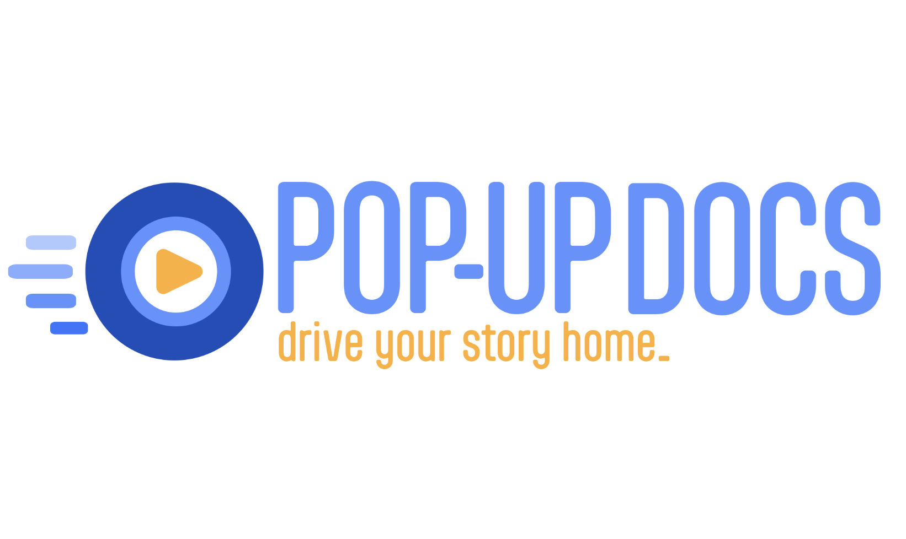
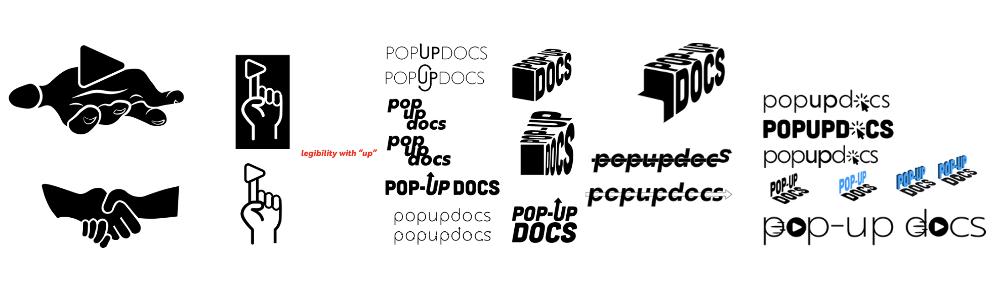
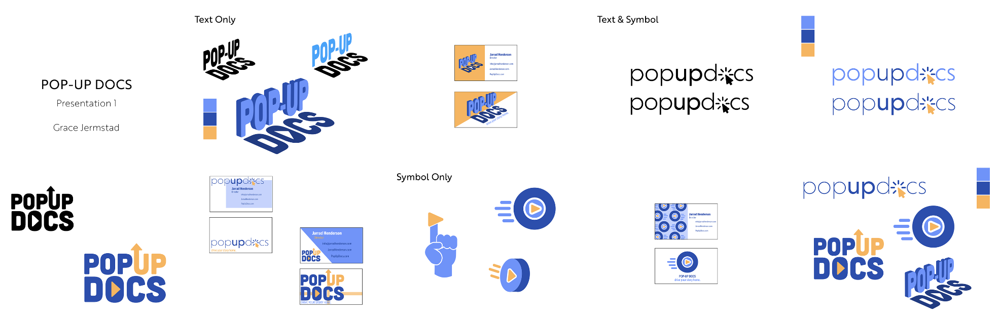
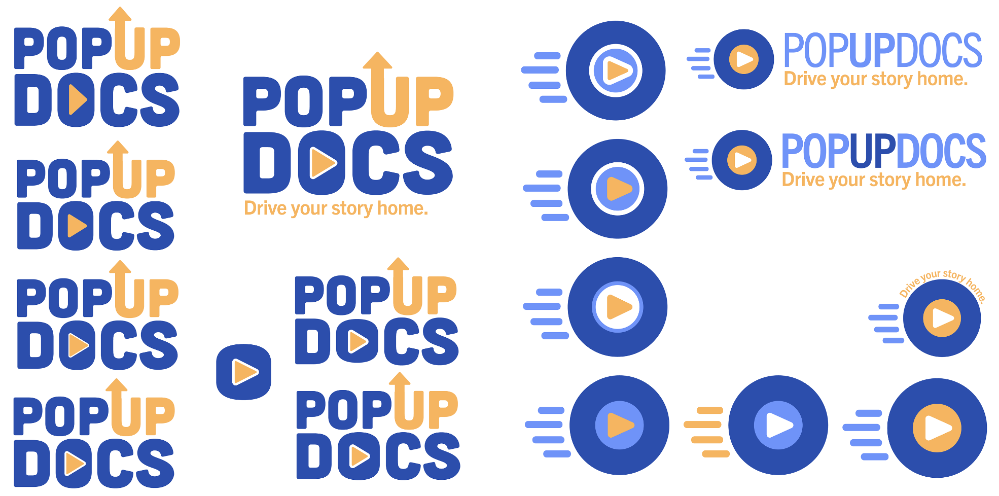
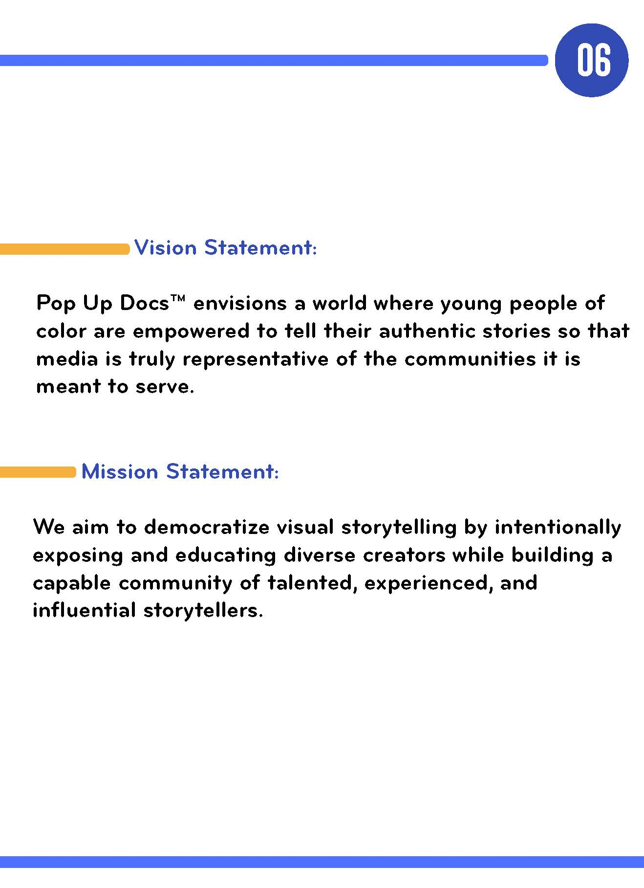
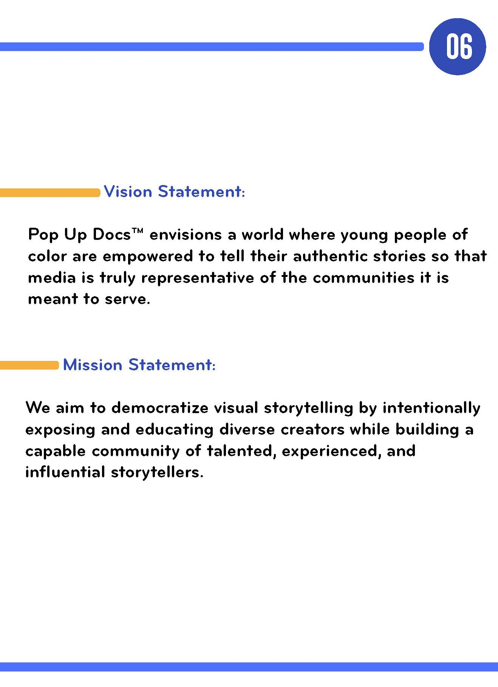

Pop-Up Docs Branding and Identity
Create a comprehensive style guide and visual identity for Pop-Up Docs, a new company, including logo design, stationery, mockups, and branding elements to establish a cohesive and compelling brand presence
The Project
Pop Up Docs™ is a mobile documentary film workshop and video editing studio (on wheels) that provides skills-building workshops for aspiring documentary storytellers from traditionally underrepresented populations. This entrepreneurial project offers an opportunity to further democratize visual storytelling by centering the power and representation of diverse creators. I was tasked with creating the style guide for this new business.
Vision Statement:
"Pop Up Docs™ envisions a world where young people of color are empowered to tell their authentic stories so that media is truly representative of the communities it is meant to serve."
Step 1: Research
After learning what Pop Up Docs' mission and vision were, I did research into what companies like this already exist. I explored branding for other non-profit community-building organizations and tech companies. I then had to decide how to combine these two ideas. My client was adamant about a design that was sleek, modern, and simple, while still conveying a sense of film media and progression.
Step 2: Ideation
After the first meeting with my client, we discussed what ideas he would like to pursue further, and any additional concerns and requests. With this new information, I created higher-fidelity sketches in order to bring the vision to life and narrow down which directions we should fully explore.
After narrowing it down to two ideas, I dove deep into perfecting these options before deciding on the final logo.
Step 3: The Logo
Step 4: The Mock-ups
This company required mock-ups of stationery, branding materials, and a company van.
Step 5: The Style Guide
Click anywhere on the page to flip through the final Style Guide.
 
